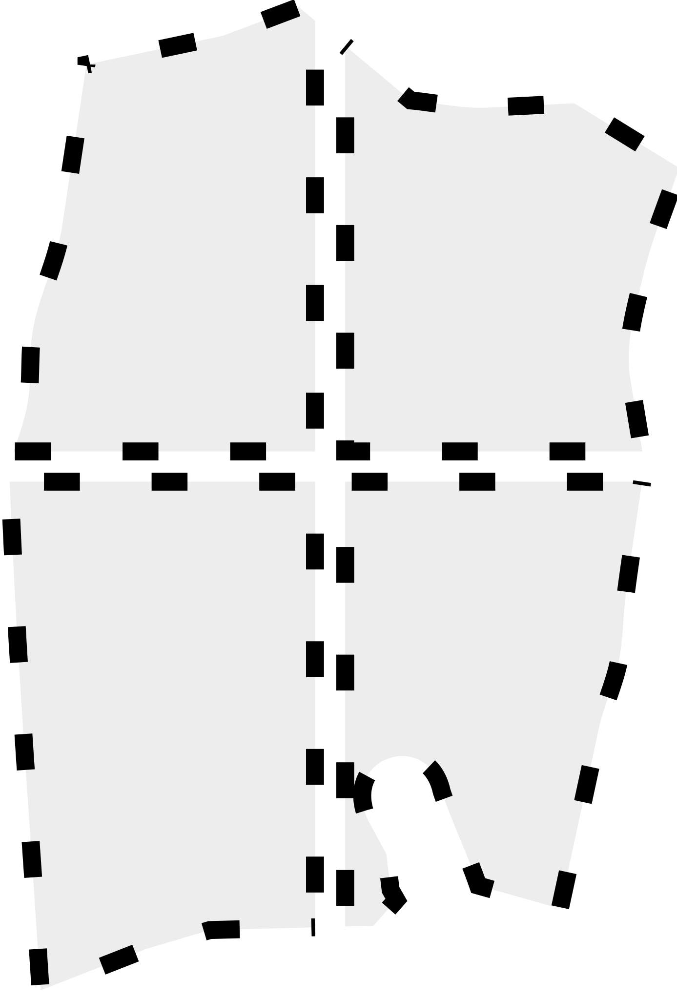

Studio Demografico e Socio-Economico del Centro Storico di Palermo
Seleziona la mappa base
CartoDB Light
Vista Satellitare
Filtra per Mandamenti
Tutti i Mandamenti
Castellammare
Tribunali
Palazzo Reale
Monte di Pietà
Indicatori Demografici
Seleziona indicatore...
Popolazione Stimata
Età Media
Tasso Anziani
Densità Abitativa
Popolazione Straniera
Indicatori Socio-Economici
Seleziona indicatore...
Tasso Occupazione
Divario Genere
Istruzione Superiore
Resilienza Economica
Coesione Sociale
Indicatori Territoriali
Seleziona indicatore...
Numero Edifici
Particelle catastali di base
Copertura del suolo
Rischio alluvione
Rischio di frana
Rischio erosione costiera
Rischio sismico
 Perimetri
Limite Amministrativo Palermo
Centro Storico
Mandamenti
Visualizzazione
Mostra bordi poligoni
Debug mode
Dettagli Particella
Clicca su una particella per visualizzarne i dettagli
Legenda